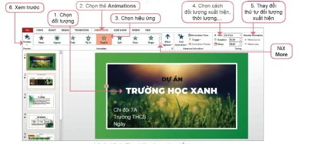
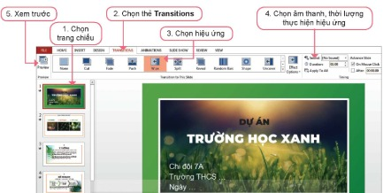

Dành cho giáo viên
Theo dõi lớp
| Học sinh / Nhóm | Đã nộp | Cập nhật |
|---|
Bước 1
1 Khởi động
Khởi động Hoàn thiện bài thuyết trình
Bài trình chiếu báo cáo dự án Trường học xanh đã có đầy đủ thông tin, mang được thông điệp cần truyền tải. Các đối tượng trong các trang chiếu cũng đã được định dạng. Việc tiếp theo của em là bổ sung các hiệu ứng động khi trình bày để có một bài thuyết trình hoàn chỉnh.
Ghi bài Khởi động
Sau khi thầy cô chốt, em chép nội dung dưới đây vào vở.
Bước 2 · Hình thành kiến thức mới
2.1 Hiệu ứng động
Hoạt động 1 Hiệu ứng động
1. Em hãy quan sát hai trang chiếu có cùng nội dung. Một trang không có hiệu ứng động, một trang có thêm hiệu ứng động cho các đối tượng. 2. Em thích xem trang nào hơn? Vì sao? Em có muốn sử dụng các hiệu ứng động trong bài trình chiếu của mình không? 3. Sử dụng hiệu ứng động cần lưu ý những điều gì? Tại sao?
Bấm ▶ Trình chiếu trên bảng dưới đây: trang 1 không có hiệu ứng, trang 2 có hiệu ứng (nháy chuột hoặc nhấn → để các đối tượng lần lượt xuất hiện).
Bấm ▶ Trình chiếu trên bảng dưới đây: trang 1 không có hiệu ứng, trang 2 có hiệu ứng (nháy chuột hoặc nhấn → để các đối tượng lần lượt xuất hiện).
Đọc hiểu Hai loại hiệu ứng động
Đọc mục 1 (SGK trang 68). Hiệu ứng động trong bài trình chiếu là cách thức và thời điểm xuất hiện của các trang chiếu và các đối tượng trên trang chiếu (văn bản, hình ảnh, biểu đồ, âm thanh,…) khi trình chiếu. Có hai loại hiệu ứng động:
- Hiệu ứng cho các đối tượng trên trang chiếu, gọi là hiệu ứng cho đối tượng.
- Hiệu ứng cho các trang chiếu, gọi là hiệu ứng chuyển trang chiếu.
Câu hỏi SGK trang 69
Ghi bài 1. Hiệu ứng động
Sau khi thầy cô chốt, em chép nội dung dưới đây vào vở.
Bước 2 · Thực hành
2.2 Thực hành tổng hợp: Hoàn thiện bài trình chiếu
Nhiệm vụ Hoàn thiện bài trình chiếu Trường học xanh
Nhiệm vụ: em hãy tạo hiệu ứng cho bài trình chiếu báo cáo dự án Trường học xanh; tổng hợp, sắp xếp, bổ sung các nội dung để hoàn thiện bài trình chiếu.
Hướng dẫn:
Hướng dẫn:
- a) Tạo hiệu ứng cho đối tượng (Hình 13.1): 1. Chọn đối tượng; 2. Chọn thẻ Animations; 3. Chọn hiệu ứng (nút More để xem thêm); 4. Chọn cách đối tượng xuất hiện, thời lượng,…; 5. Thay đổi thứ tự đối tượng xuất hiện; 6. Xem trước (Preview).
- b) Tạo hiệu ứng chuyển trang chiếu (Hình 13.2): 1. Chọn trang chiếu; 2. Chọn thẻ Transitions; 3. Chọn hiệu ứng; 4. Chọn âm thanh, thời lượng thực hiện hiệu ứng; 5. Xem trước.
- c) Sử dụng hiệu ứng hợp lí: trình bày càng đơn giản, rõ ràng thì càng thuyết phục; dùng hiệu ứng chuyển trang thống nhất cho tất cả các trang; chọn lọc hiệu ứng cho các đối tượng – tự trả lời câu hỏi “Hiệu ứng này có thể khiến bài thuyết trình hiệu quả hơn không?”; chỉ dùng âm thanh khi thật cần thiết.
- d) Hoàn thiện bài trình chiếu: xem lại bố cục, nội dung của bài báo cáo; bố trí lại các đối tượng trên trang (khung văn bản, hình ảnh, bảng biểu,…), định dạng lại một số hình ảnh, căn lề văn bản (nếu cần); em có thể sáng tạo thêm, phát huy khả năng hội hoạ của mình trong cách trình bày bài báo cáo; lưu lại kết quả làm việc.


Làm trên phần mềm trình chiếu mô phỏng: bài Truonghocxanh đã có 4 trang. Nháy vào tiêu đề, khung nội dung hoặc hình ảnh rồi chọn Hiệu ứng; chọn Start, Duration; đổi thứ tự trong Animation Pane; chọn Chuyển trang rồi bấm Apply To All; bấm Preview để xem trước. Thêm trang Dự kiến kết quả và trang Kết luận để hoàn thiện bài rồi trình chiếu toàn bộ.
Ghi bài 2. Thực hành
Sau khi thầy cô chốt, em chép nội dung dưới đây vào vở.
Bước 3
3 Luyện tập
Luyện tập Hiệu ứng cho bài trình chiếu của nhóm
Ghi bài Luyện tập
Sau khi thầy cô chốt, em chép nội dung dưới đây vào vở.
Bước 4
4 Vận dụng
Vận dụng Hoàn thiện Baitaptinhoc7.pptx
Có thể soạn thử trên phần mềm trình chiếu mô phỏng dưới đây trước khi làm trên máy tính.
Ghi bài Vận dụng
Sau khi thầy cô chốt, em chép nội dung dưới đây vào vở.